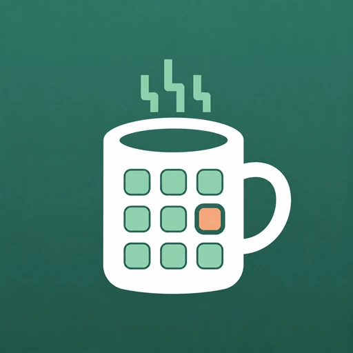

Проект не заканчивается на одной карточке
У задачи есть дерево подзадач, отдельные статусы, заметки, изображения и свой порядок. Ветки можно перемещать, копировать и возвращать в календарь.

Tea Calendar Case studyPRODUCTION PWA ДЛЯ ЛИЧНОЙ ПРОДУКТИВНОСТИ
Задачи, дневник и расходы в одном приложении, которым я пользуюсь каждый день.
Из личной потребности
Когда несколько проектов идут параллельно, одной карточки на временной сетке мало. Мне нужны были многоуровневые подзадачи, чтобы разбирать большую работу на конкретные действия и не держать всю структуру в голове.
Я сделал свой инструмент. Затем добавил дневник, расходы, совместные поручения и мобильную PWA. Теперь Tea Calendar помогает мне планировать работу и не терять контекст между проектами.
План остается связан с тем, что нужно сделать, запомнить и посчитать.
У задачи есть дерево подзадач, отдельные статусы, заметки, изображения и свой порядок. Ветки можно перемещать, копировать и возвращать в календарь.
Дневные заметки хранят решения, итоги и изображения рядом с расписанием. Редактор сохраняет изменения автоматически.
Покупки складываются в деревья по дням. Суммы принимают формулы, а отчет показывает итог за любой период.
PWA устанавливается на iOS и Android. Перенос задач, изменение времени и навигация работают с сенсорными жестами.
Задача проходит через план, выполнение и историю. Ее можно увидеть на временной сетке, в Kanban или в общем списке, не создавая копии в разных сервисах.
Сделал весь продукт один
Спроектировал модель данных и пользовательские сценарии, собрал адаптивный интерфейс, API, авторизацию, загрузку файлов и интеграции.
Развернул сервис в Docker за Nginx и HTTPS. Релизный сценарий сохраняет базу и файлы, проверяет готовность и возвращает предыдущую версию при сбое.
ПРОДУКТОВАЯ FULLSTACK-РАЗРАБОТКА